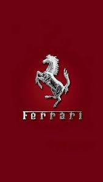
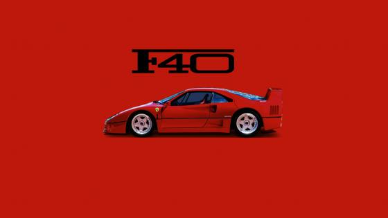
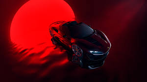
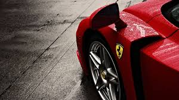
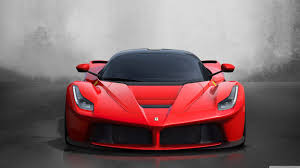

FERRARI
Ferrari cars are renowned as high-performance, luxury sports cars, celebrated for their racing heritage,
exclusivity, and iconic design. The company, founded in 1929 by Enzo Ferrari, boasts a history of success in
Formula One and is known for its "Prancing Horse" logo

OUR YOUTUBE CHANNEL TO KNOWS US MORE
youtube LINK
ABOUT US
ACHIEVEMENTS
Ferrari's major achievements include their dominant history in Formula One, winning 15 Drivers'
Championships and 16 Constructors' Championships, and holding the record for the most Grand Prix victories
with 239. Beyond Formula One, they have also won prestigious races like the World Sportscar Championship and
the 24 Hours of Le Mans.
Formula One Achievements:
Most Grand Prix Wins: Ferrari has the most Grand Prix wins in Formula One history, with 239 victories.
Constructors' Championships: They have won 16 Constructors' Championships, more than any other team.
Drivers' Championships: Ferrari drivers have won 15 Drivers' Championships.
Dominance: They have had periods of total domination, including winning both the Drivers' and Constructors'
titles three years in a row, according to Formula 1.
Achievements Outside of Formula One:
World Sportscar Championship: Ferrari has won the World Sportscar Championship.
24 Hours of Le Mans: They have won the 24 Hours of Le Mans.
Other Endurance Races: Ferrari has also won other prestigious endurance races like the 24 Hours of Daytona,
12 Hours of Sebring, 24 Hours of Spa, Targa Florio, and Mille Miglia, according to Wikipedia.
SKILLS
Ferrari drivers need a diverse set of skills encompassing not only exceptional driving talent but also
cognitive abilities and a deep understanding of the vehicle and racing environment. These skills are honed
through rigorous training and practice, with a focus on reflexes, vehicle dynamics, track strategy, and
mental fortitude. Beyond driving, Ferrari drivers also develop strong communication and teamwork skills,
essential for interacting with engineers and mechanics
photos




singup form
CONTACT US